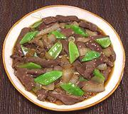

|
Liver & OnionsKorea - Kangui | ||||
| Serves: Effort: Sched: DoAhead: |
3 w/rice ** 40 min hrs Prep |
Liver and Onions are a standard pairing worldwide. This Korean take is quick, easy and rather tasty - you may not even notice it's liver. Do not overcook, the onions should still be a bit crisp. | |||
|
8 9 ------ 1 2 1 1 1/2 1/2 ------ 2/3 ------ 1 10 |
oz oz --- cl T t T T t -- c -- |
Liver (1) Onion -- Seasonings Garlic Soy Sauce Sesame Oil dark Sesame, toasted (2) Sugar Pepper, black --------------- Water -- Garnish Scallion Snow Peas |
Note: I have cut the amount of sugar in the pattern recipe in half - adjust to your taste. Prep - (25 min)
|